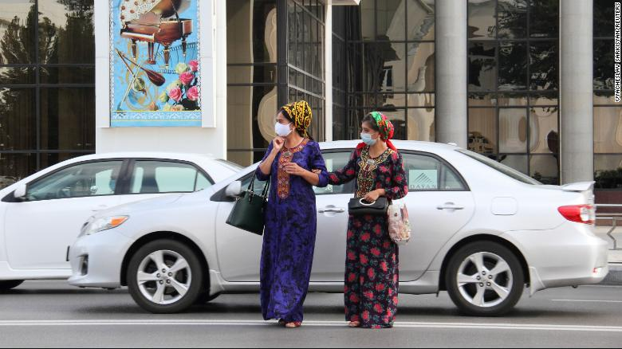
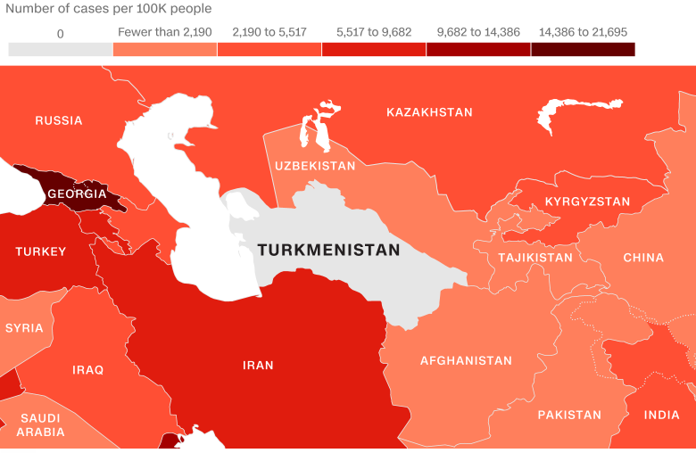

Home > News
This country claims it hasn't had a single Covid-19 case. Activists say that is a lie
By Omowumi
Updated 0420 WAT September 26, 2021
Turkmenistan women wearing facemasks walk in Ashgabat on July 13, 2020
In the nearly two years since the pandemic began, Turkmenistan has not seen a single case of Covid-19.
Or at least, that's what the central Asian country's secretive, authoritarian government claims.
Turkmenistan, a former Soviet republic home to nearly 6 million people, is one of at least five countries that have not reported any coronavirus cases, according to a review of data collected by Johns Hopkins University and the World Health Organization. Three of those are isolated islands in the Pacific and the fourth is North Korea, a tightly-controlled hermit state.
Turkmenistan's repressive President Gurbanguly Berdymukhamedov, who has ruled since 2006, has dismissed reports of Covid-19 in the country as "fake" and told the United Nations in an address Tuesday that the response to the pandemic shouldn't be "politicized."
But independent organizations and journalists and activists outside Turkmenistan say there's evidence the country is battling a third wave which is overwhelming hospitals and killing dozens of people -- and warn the President is playing down the threat of the deadly virus in a bid to maintain his public image.
Women wearing protective face masks cross a road in Ashgabat, Turkmenistan, on July 15, 2020.
Ruslan Myatiev, an exile from Turkmenistan and editor of the Netherlands-based independent news organization Turkmen News, said he has personally assembled the names of more than 60 people who he claimed have died of Covid-19 inside the country, including teachers, artists and doctors.
Myatiev said he has verified all the recorded deaths with health records and X-rays, revealing severe lung damage and medical treatment consistent with coronavirus victims.
"Instead of accepting it and cooperating with the international community, Turkmenistan decided to stick its head in the sand," said Myatiev.
The Turkmenistan government did not respond to requests for comment.
How it unfolded
As Covid-19 spread around the world at the start of 2020, Turkmenistan insisted it had no cases, even as bordering countries reported skyrocketing outbreaks.
Iran, with which Turkmenistan shares a long land border, has reported one of the world's largest Covid-19 outbreaks with nearly 5.5 million total cases, according to the World Health Organization (WHO).
"You look at what's happening at other countries in the region and how different could Turkmenistan possibly be?" said Rachel Denber, deputy Europe and Central Asia director at Human Rights Watch.
Zero Reported Cases
Turkmenistan has not reported any COVID-19 cases since the start of the pandemic
According to the websites of the British and Australian foreign ministries, all flights into Turkmenistan are currently suspended and only Turkmen citizens are allowed to enter the country.
Myatiev said his sources in Turkmenistan began contacting him about cases in around May 2020 -- about the same time Covid-19 was spreading around the world. He said the first messages he received talked about a "weird lung disease, flu-like" which was affecting many people.
"It was at least 40 degrees Celsius outside (104 degrees Fahrenheit) -- not a usual flu season," he said.
In June 2020, the US embassy in the capital, Ashgabat, issued a heath alert warning of "reports of local citizens with symptoms consistent with Covid-19 undergoing Covid-19 testing," and being placed in quarantine for up to 14 days.